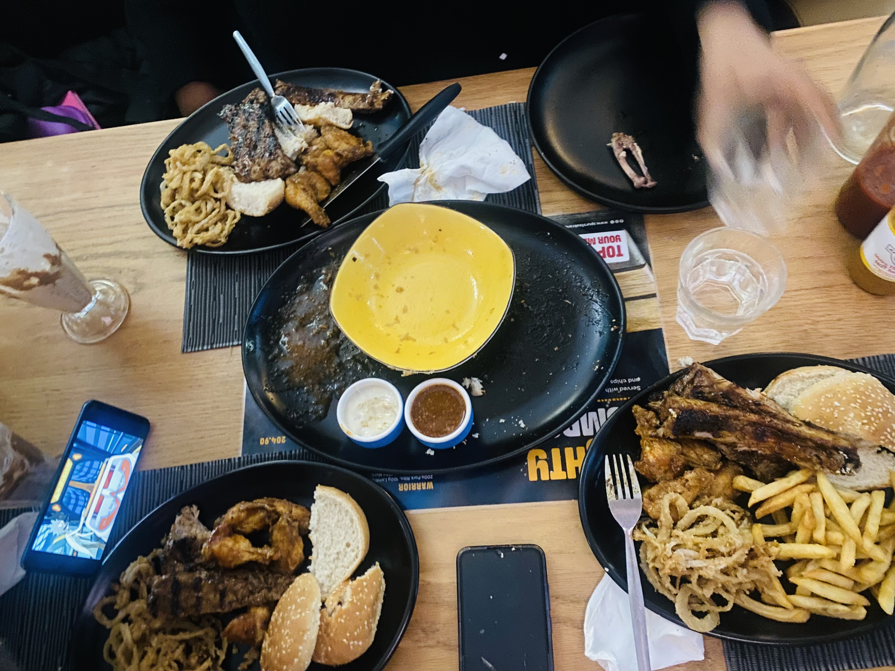
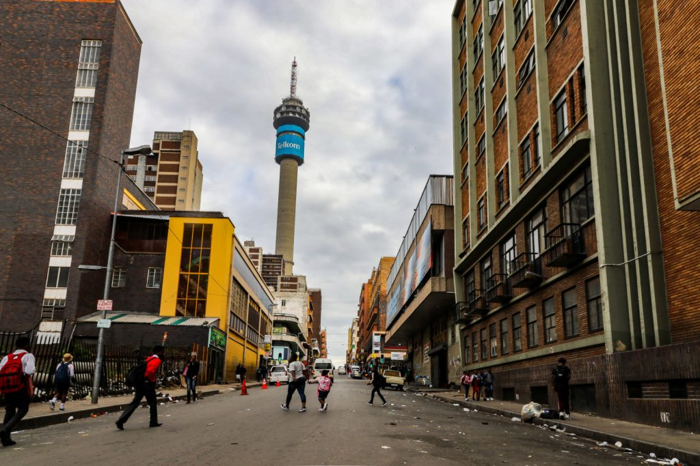

5th January, 2025
Food: The Ultimate Brain Fuel, Soul Healer & Social Glue
They say, "One cannot think well, love well, sleep well, if one has not dined well." And honestly, who are we to argue with Virginia Woolf? The woman knew what she was talking about. Because let’s be real—how are you supposed to solve life’s mysteries (or even decide what to watch on Netflix) when your stomach is growling like a caged lion?
Food is more than just survival—it’s the magic potion that fuels our bodies, heals our souls, and somehow turns even the most awkward social gatherings into unforgettable moments. Let’s break it down, bite by bite.
Brain Gains: Why Your Mind Loves a Good Meal:
Ever tried to focus on an important task while hungry? It’s impossible. Your brain refuses to cooperate. Suddenly, basic math feels like rocket science, and your patience level is dangerously low. That’s because your brain is a high-maintenance little organ that demands energy—preferably in the form of good food (not just energy drinks and instant noodles, no shade though).
A well-fed brain is a happy brain. That’s why your best ideas seem to arrive when you’re casually munching on something. Coincidence? I think not. There’s a reason philosophers, writers, and deep thinkers throughout history have gathered around tables filled with bread, wine, and cheese before dropping knowledge bombs.
Soul Food: The Comfort We Didn’t Know We Needed:
You ever take a bite of something so good, it feels like a warm hug from the universe? That’s food doing its soul work. Whether it’s a bowl of homemade soup on a rainy day or a late-night snack that hits just right, food has this sneaky way of comforting us when we need it most.
And let’s not forget nostalgia bites—those meals that instantly transport you back to childhood. Maybe it’s your grandma’s famous stew or the cookies your mom used to make when you had a bad day. Food is memory, emotion, and therapy—all in one delicious package.
Why Every Social Gathering Comes with a Side of Snacks:
Think about it—parties, dates, family get-togethers, even business meetings… they all involve food. Why? Because food is the ultimate social lubricant. It gives people something to do, something to talk about, and most importantly, something to bond over.
Ever noticed how silence at a dinner table isn’t awkward, but silence in a meeting room is? That’s because food creates a sense of togetherness. It’s the universal icebreaker. Even if you don’t speak the same language, you can connect over a good meal.
That’s why we bring food to celebrations, offer it as a sign of hospitality, and why “grabbing a bite” is the unofficial love language of friendship. Because breaking bread together isn’t just about eating—it’s about sharing a moment.
Final Bite:
So the next time someone tells you that food is “just fuel,” politely hand them a snack and walk away. Because food is everything—brain fuel, comfort, connection, and let’s be honest, the highlight of most of our days.
Eat well, think well, live well. And if you ever feel lost, confused, or just meh—grab a good meal. The answers might just be hidden in that last bite.
Bon appétit!

5th January, 2025
The Johannesburg Hustle: Early Mornings, Long Queues, and the Cost of Survival
Having recently moved to Johannesburg, I've quickly come to understand the daily grind that defines life for much of the city's working class. The early mornings, the long commutes, and the relentless hustle are more than just routines; they're a testament to resilience in the face of systemic challenges.
The Pre-Dawn Hustle:
Before the sun even hints at rising, countless Johannesburg residents are already on the move. The blaring alarm at 4:00 AM signals the start of a long day. Bleary-eyed, they prepare for work, knowing that punctuality isn't just expected—it's demanded.
The journey begins with a walk to the nearest taxi rank. These minibus taxis are the lifeblood of Johannesburg's public transport system, especially for those who can't afford private vehicles. Queues form quickly, and the wait can be long, especially during peak hours. Rainy days add another layer of discomfort, as commuters huddle under inadequate shelters, trying to stay dry.
Commuting Woes:
Once aboard, the taxi ride offers a brief respite—a chance to catch a few more minutes of sleep before the workday begins. But this rest is fleeting. The reality of traffic congestion means that a significant portion of the day is spent in transit. For many, this daily commute isn't just a minor inconvenience; it's a substantial drain on both time and energy.
Economic Strain:
Despite the long hours and dedication, financial compensation often falls short. As of 2024, South Africa's minimum wage stands at R25.42 per hour. For a standard 45-hour workweek, this amounts to approximately R4,575 per month. In a city where the cost of living continues to rise, making ends meet on such wages is a constant struggle.
The dream of owning a car remains out of reach for many. With the average cost of a new vehicle exceeding R300,000, and even used cars demanding significant investment, the reliance on public transport isn't a choice but a necessity.
Social Disparities:
Johannesburg is a city of contrasts. Gated communities with manicured lawns stand in stark opposition to informal settlements. This juxtaposition is reminiscent of the film "Parasite," where a rainstorm brings joy to the affluent family, while simultaneously wreaking havoc on the impoverished one. In Johannesburg, a heavy downpour might be a minor inconvenience to some, but for others, it means flooded homes and disrupted lives.
A Personal Reflection:
Immersing myself in this environment has been eye-opening. The resilience of Johannesburg's working class is both inspiring and heart-wrenching. It's a daily reminder of the systemic inequalities that persist and the urgent need for meaningful change.
As I navigate this city, I carry with me a heightened awareness of these disparities and a commitment to advocate for a more equitable Johannesburg.
5th Jan, 2025
Table for One, Please: Thriving in My 20s as a Solo Act
“Loneliness is not something to be feared.”
If you had told my younger self that one day I’d enjoy being alone, I would have laughed in your face—probably while aggressively refreshing my messages, wondering why no one was texting me back. I used to think solitude was something to be avoided, something that happened to people, not something they actively chose. But here I am, in my 20s, single, and... loving it?
I won’t lie—it wasn’t an instant shift. At first, eating alone at a restaurant felt like a public declaration of my relationship status. I imagined strangers looking at me like, shame, she’s all alone. But now? I sit there, sipping my overpriced matcha, romanticizing my life like I’m the main character. Because, honestly? I kind of am.
Family, Friends & FaceTime: The Cure for Loneliness:
One of the biggest realizations I’ve had is that being alone doesn’t mean being lonely. I have family I can call whenever I need a reminder that I am loved (or whenever I need help adulting). I have friends just a video call away—ready to dissect the latest Netflix drama or overanalyze texts that don’t need analyzing.
So, instead of clinging to the idea that I need a relationship to feel fulfilled, I’ve started embracing the freedom that comes with being single. And let me tell you, it’s a beautiful thing.
Finding Romance in Myself:
Who says romance has to be reserved for relationships? I find romance in late-night coding sessions, in mastering new skills, in discovering hobbies that make me feel alive. I get butterflies over career milestones, not text notifications. The thrill of learning something new? Chef’s kiss.
I’ve decided that settling down isn’t even in my five-year plan. Not because I don’t believe in love, but because I love this—this season of focusing on myself, growing, and chasing my dreams without compromise.
The Blessing of Choice:
The more I think about it, the more I realize how lucky I am to have this choice at all. As a Black woman, I carry the stories of the generations before me—women who didn’t always have the luxury of choosing themselves. My grandmother’s life path was mapped out before she even had a say. Marriage, children, duty. Meanwhile, I can choose to be single, child-free, and book a spontaneous flight to wherever my heart desires.
And for that, I am endlessly grateful. Because their sacrifices paved the way for my autonomy. Their struggles gave me the freedom to say, I want more, and to go after it unapologetically.
Final Thoughts: The Soft Life, Solo Edition:
So here I am—single, thriving, and unbothered. Romanticizing my independence, treating myself to soft life moments, and relishing the fact that my life is mine to design.
To anyone fearing loneliness, let me tell you this: being alone can be one of the most empowering experiences of your life. You get to learn yourself, love yourself, and build a life that you find fulfilling.
And hey, if I ever get the urge to hear the words “I love you” before bed, I’ll just do what I always do—text my best friend.
Leave a Comment